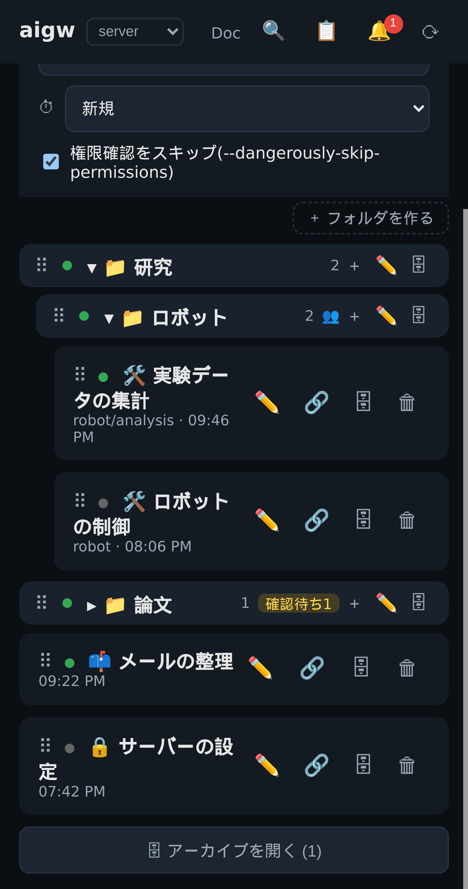
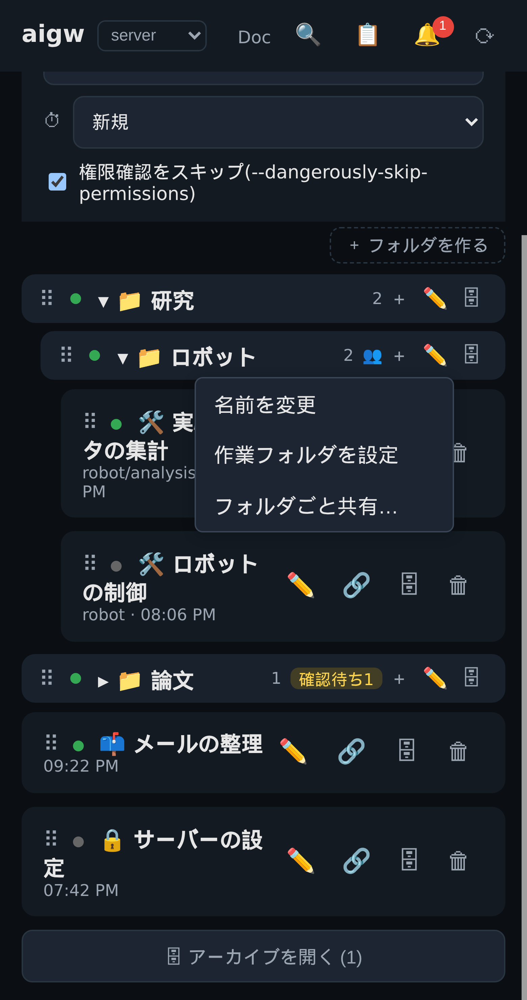
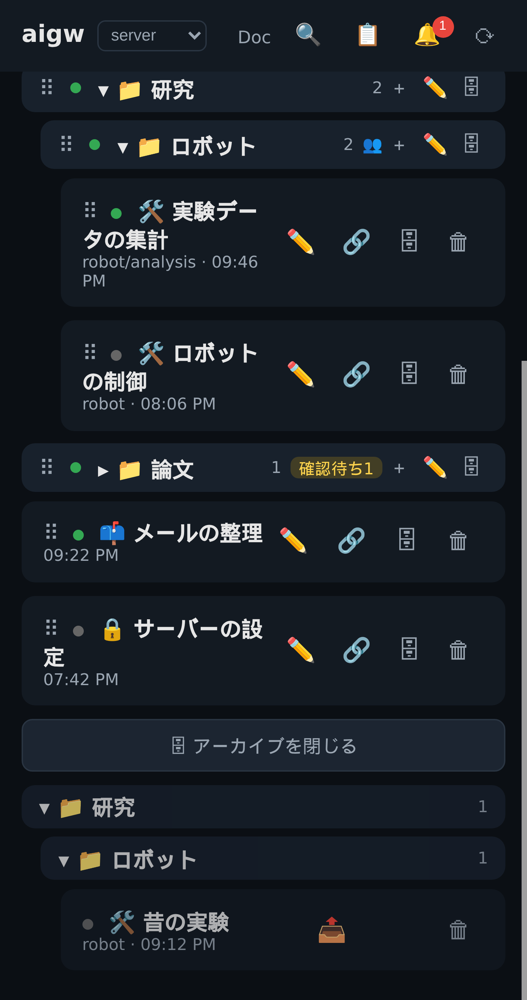
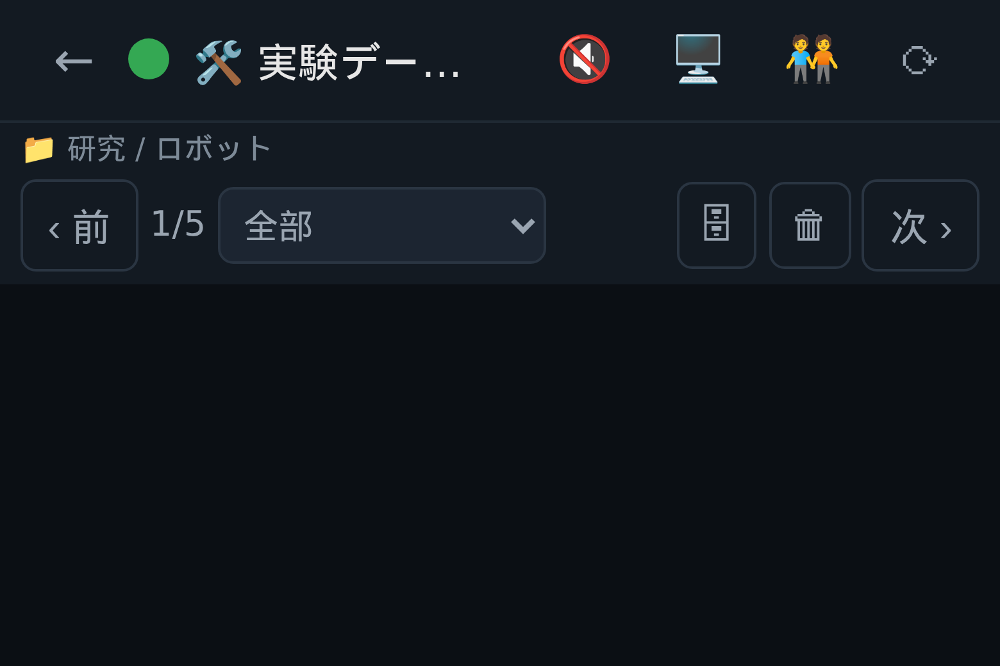
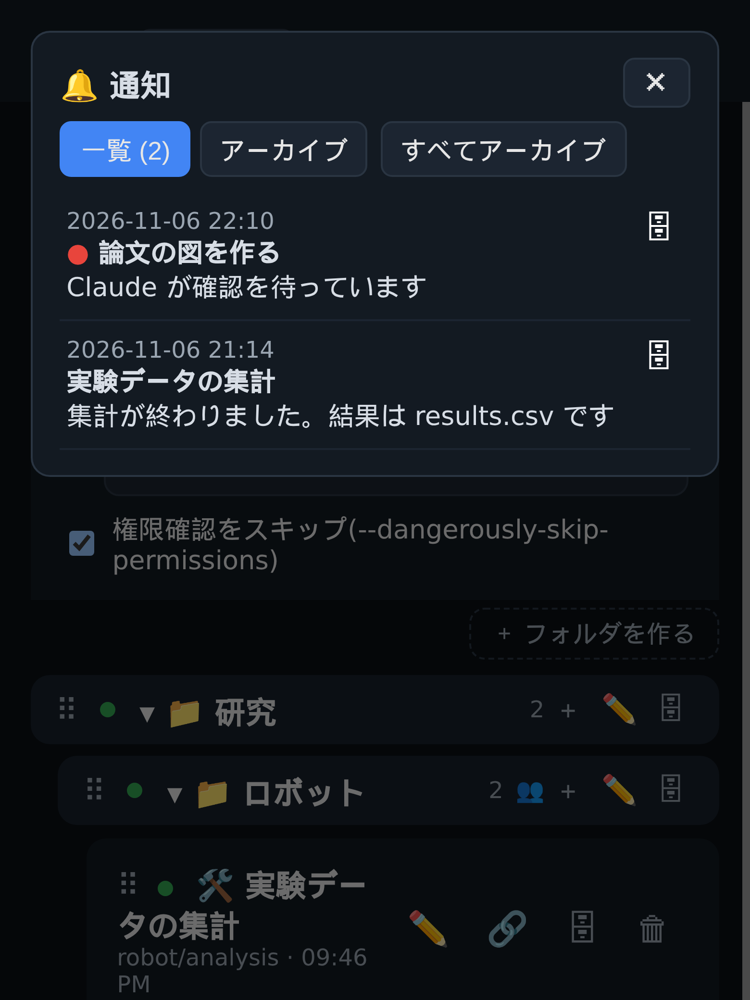
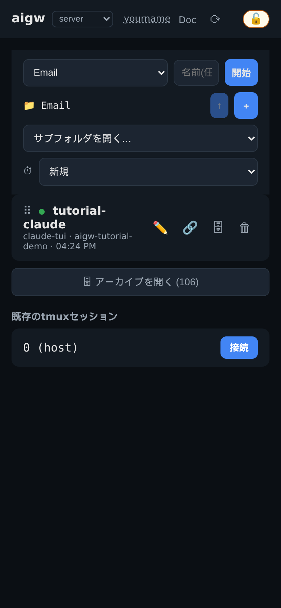
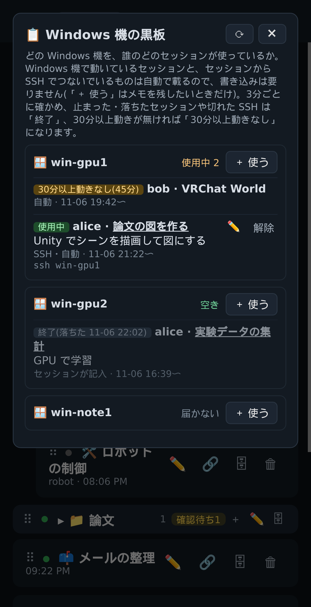

aigw チュートリアル 発展編
基本編の続きです。セッションが増えてきたときの整理(フォルダ・巡回・通知)、他のセッションとの連携、砂場の外(Email・ホスト・ルート)、他のマシンの使い方を説明します。
1. フォルダで整理する
セッションはフォルダにまとめられます。フォルダの中にフォルダを作ることもでき、段数に制限はありません。

- 作る: 一覧の上の「＋ フォルダを作る」。フォルダの中に作るときは、そのフォルダの行の ＋ →「この中にフォルダを作る」。
- 入れる・動かす: 行の左の ⠿ をつかんで、フォルダの行の上で離すとその中に入ります。行と行の間で離すと、そこへ並べ替えます。フォルダごと別のフォルダに入れることもできます。
- 開く・閉じる: フォルダの行をタップ。行の数字は中のセッションの数、「確認待ち」は中で返事を待っているものの数です。
- まとめて止める・再開する: フォルダの行の ● をタップすると、中で動いているセッションをすべて止めます。止めたあとの灰色の ● をタップすると、そのとき止めたものをまとめて再開します。
- アーカイブ: 🗄 でフォルダごとアーカイブ。消すのは空のフォルダだけです(🗑)。
作業フォルダ

フォルダに作業フォルダ(サーバー上の場所)を1つ持たせられます。✏️ →「作業フォルダを設定」で、robot のように書きます。
- 場所は相対で書きます。砂場のセッションなら
~/sandhome/robot、ホストのシェルなら自分のホームの下、ルートのシェルなら/rootの下の、同じ名前の場所です。 - そのフォルダの ＋ →「このフォルダで新しいセッション」を押すと、一覧の上の作成欄に「📁 ロボット · 作業フォルダ ~/robot」と出ます。開始を押すと、その場所でセッションが始まり、そのフォルダに入ります。場所が無ければ作られます。
- どこから作っても、作業フォルダの中で始めた新しいセッションは、自動でそのフォルダに入ります。
- 作業フォルダを書いていないフォルダは、上のフォルダのものを使います。
フォルダごと共有する
✏️ →「フォルダごと共有…」で、中のセッションすべてを共有できます(下のフォルダや、あとから入れたものも)。相手と「閲覧のみ/共同作業」の選び方は、1つずつの共有(基本編)と同じです。ルートのシェルは閲覧のみになり、Email はフォルダでは共有されません。共有中のフォルダには 👥 が付きます。
アーカイブの中のフォルダ

フォルダの中でアーカイブしたセッションは、「🗄 アーカイブを開く」の中でも同じフォルダの下に並びます。📤 で戻すと元のフォルダに戻ります。フォルダごとアーカイブしたものは、そのフォルダの行の 📤 でまとめて戻せます。
2. 確認待ちと巡回
Claude が返事を待っている(作業が終わった、計画の承認を求めている、など)セッションには、一覧の名前の横に黄色い「確認待ち」が付きます。

- チャット画面で名前の部分をタップすると、巡回の帯が開きます(もう一度タップで閉じる)。
- ‹ 前・次 › で、一覧に戻らずに前後のセッションへ移ります。順番は一覧(フォルダの中も含む)の順です。
- 選択欄で「全部・動いているもの・確認待ち」を選べます。「確認待ち」にすると、返事を待っているものだけを順に回れます。
- 🗄 で今のセッションをアーカイブ、🗑 で会話ログを削除して、そのまま次へ移ります。
- 帯の上の小さな字は、そのセッションが一覧のどのフォルダにあるかです。
3. 通知の一覧

- 画面の上の 🔔 で、これまでに届いた通知(プッシュ)の一覧が開きます。赤い数字はまだ見ていない数です。
- それぞれに日時・セッションの名前・本文が出ます。押すとそのセッションを開きます。
- 一覧に出たものは表示済みになります。🗄 で1件、「すべてアーカイブ」でまとめてアーカイブできます。
- 済んだものは自動でアーカイブに移ります: 通知のあとにそのセッションへ自分が何か送った、セッションが終わった・アーカイブした・消した、のどれか。理由はアーカイブの欄に出ます。
4. セッション同士をつなぐ
一覧の 🔗 で、2つのセッション(例えば、砂場の Claude とホストの Claude)をつなげます。つながると、片方の Claude が talkto "…" を実行したときだけ、その文が相手の入力欄に届きます。何でも自動で転送するわけではありません。使い方は Claude 自身が talkto --help で調べられます。
5. 砂場・ホスト・ルート・Email の違い
作成欄の種類は「どこで動くか」が違います。普段使うのは砂場(Claude・Codex・Shell (sandbox内))だけです。
| 種類(作成欄の表示) | 動く場所 | 見えるもの | パスキー | 使いどころ |
|---|---|---|---|---|
| Claude / Codex / Shell (sandbox内) | 砂場: 自分専用のコンテナ | ~/sandhome だけ | 不要 | 普段の開発すべて |
| Email の箱: 砂場とは別のコンテナ(設定されたサーバーだけ) | ~/mailbox だけ | 🔑 ホスト階層 | メールや個人情報など、開発用の砂場に置きたくないもの | |
| Shell (sandbox外・ホスト) | サーバーそのもの、自分の権限 | 本物のホーム(~/)など | 🔑 ホスト階層 | コンテナの外のファイルを触るとき |
| Shell (root・sandbox外) | サーバーそのもの、root | すべて | 🔓 ルート階層 | サーバーの管理。許可された人だけに表示 |
- なぜ砂場が普段使いなのか: コンテナの中では、Claude が何を実行しても自分の
~/sandhomeの外には届きません。だから権限確認をスキップしても安全です。 - Email の箱を分ける理由: 砂場では、
npm installで入ってきた他人のパッケージも動きます。メールのような情報をそこに置くと、それらからも読めてしまいます。Email の箱は砂場から見えない別のコンテナで、会話の記録も~/mailboxの側に残ります。 - マシン選択で ssh でつないだ他のマシンを選ぶと、その機械の Claude やシェルも使えます。砂場とはファイルを共有しません(9章)。
- 一覧では、名前の前のアイコンで種類が分かります: 🛠️ 砂場、📫 Email、🏠 ホスト、🔒 ルート、💻 他のマシン。
6. 設定画面と Claude へのログイン
Claude を初めて使う前に、使う場所ごとに1回ずつ Claude にログインします。砂場・ホスト・ルート・他のマシンでログイン情報は別々です。Email の箱だけは設定画面に行が無く、箱の中でログインします。

開き方
トップ画面のマシン選択(server の欄)で設定を選びます。戻るときは、同じ欄で server(このサーバー)を選び直します。
ログインの手順
- 「Accounts」の sandbox内 の行(ホストや他のマシンで使うならその行)の ログイン を押します。ログイン用のチャット画面が開きます。
- チャットに URL が出るので、タップしてブラウザで開き、Claude のアカウントで承認します。
- 表示されたコードをコピーし、チャットの入力欄に貼り付けて 実行。貼ったコードは画面に表示されませんが、それで正常です。
- 成功・失敗の1行が出てログイン用のセッションは自動で消えます。設定画面の行にメールアドレスが出ていれば完了です。
- 行の文字が「Not logged in」(黄色)のところでは、その場所の Claude は動きません。
- Codex の欄も同じ手順です(ChatGPT のアカウント)。
- 見出しの横の ⟳ で状態を取り直せます。
- 見出しの横の選択欄で 表示言語(日本語・English・简体中文)を変えられます。選んだ言語は保存され、ほかの端末でもログインすれば同じになります。ログイン画面の下でも選べます。
- いちばん下の 👥 全員のログイン一覧 で、このサーバーの全員が、どこでどの Claude・ChatGPT のアカウントにログインしているかを見られます(見るだけ)。ルートのログインは、ルートの解錠中の人にだけ出ます。
- その上の Kill Chrome は、自分用のテスト用ブラウザ(ヘッドフル Chrome)を止めるボタンです。重くなったときに押してかまいません。次に使えば自動でまた起動します。
7. Email とパスキー(鍵)の登録
Email・ホスト・ルートのようにコンテナの外へ出るときは、パスキー(スマホの指紋・顔認証や PC の PIN で守られた鍵)で解錠します。aigw のログインが盗まれても、手元の端末が無ければ外には出られないようにするためです。
パスキーを登録する(最初の1回)
- PC から SSH でサーバーに入ります(基本編 1章)。SSH が内側のネットワークからだけのサーバーでは、先に内側に入ります。
ssh <ユーザー名>@<サーバー> aigw-passkey register - URL が表示されます。5分以内に、パスキーを置きたい端末(普段 aigw を使うスマホなど)のブラウザで開きます。この URL は外からでも開けます(内側のネットワークが要るのは SSH だけ)。
- 「パスキー登録」のページで パスキーを登録する を押し、指紋・顔認証・PIN で確認します。
- 完了の表示が出たら終わりです。端末を増やしたいときは、その端末でもう一度同じ手順を行います。
aigw-passkey list、今の状態は aigw-passkey status で見られます。Email を使う

- 作成欄で Email を選びます(設定されたサーバーにだけあります)。フォルダは自分の
~/mailboxから始まり、Claude と同じように下のフォルダを選んだり、＋で作ったりできます。 - 開始を押すと、端末のパスキーの確認が出ます。指紋などで確認すると、右上に 🔑 が付いて解錠され、セッションが始まります。
- 初めての Email セッションだけ、箱の中の Claude がログインを求めます。🖥️ で画面パネルを開き、キーの列の ↑ ↓ ⏎ でログイン方法(Claude のアカウント)を選び、出てきた URL を開いて承認し、表示されたコードを入力欄に貼って 実行 します。続けて権限確認をスキップしてよいかの確認が出たら、同意する方を選びます。2回目からは出ません。
- あとは砂場の Claude と同じ使い方です。
~/mailboxは最初は空なので、使いたい道具(メールを読むスクリプトなど)は自分で、または Claude に頼んで用意します。
- 解錠は、施錠するか2時間たつまで続きます。
- 右上の 🔑 をタップすると、すぐに施錠できます。施錠中に Email のセッションを開くと「🔒 … 解錠する」の帯が出るので、タップして解錠します。
- Email の箱は、砂場の Claude からは見えません。逆に、Email の中身を砂場に持ち出す指示も出さないようにしてください。
8. ルートになるための手順
ルート(サーバーの管理者権限)は、管理者が許可した人だけが使えます。経路は2つあり、どちらも本人の操作が要ります。
aigw の「Shell (root・sandbox外)」を使う
- 管理者に頼みます。管理者がサーバーで次を実行し、表示された URL を渡してくれます。
sudo aigw-passkey register <ユーザー名> --tier root - 受け取った URL を5分以内に、自分の端末のブラウザで開いて パスキーを登録する を押します。これがルート階層のパスキーです(ホストと Email の解錠にも使えます)。
- aigw を再読み込みすると、作成欄に Shell (root・sandbox外) が出ます。選んで 開始 を押し、パスキーで確認すると右上が 🔓 になり、root のシェルが開きます。
- root のシェルで Claude を使うには、設定画面の root の行で Claude にログインしておきます(6章)。
SSH で sudo を使う
サーバーで sudo を許可されている人は、SSH で入って sudo を使えます。誰に許可するかは管理者が決めます。
9. 他のマシンと Windows 機の黒板
サーバーに ssh でつないだ他のマシン(GPU の載った Windows 機など)があれば、マシン選択(server の欄)に並びます。選ぶと、一覧と作成欄がそのマシンのものになり、そのマシンの上で Claude やシェルを動かせます。届かないマシン(電源が切れているなど)は出ません。
- Windows 機では、作成欄で作業ドライブとフォルダ(
C:・D:…)を選べます。前の会話の続きも選べます。 - 🐚/🪟 の切り替えで、画面の無いところ(🐚)か、ログオン中のデスクトップ(🪟、画面付きのアプリを動かすとき)かを選びます。
- 他のマシンのセッションは、一覧で 💻 が付きます。
Windows 機の黒板

Windows 機は何人かで使うので、「どれを、誰のどのセッションが使っているか」が分かる黒板があります。画面の上の 📋 で開きます。人も Claude も、使う前に黒板を見るだけで、書き込む必要はありません。
- 自動: その Windows 機で動いている aigw のセッションは、自動で載ります。
- SSH・自動: 砂場やホストのセッションの中から
ssh・scp・sftp・rsyncで Windows 機につないでいると、それも自動で載ります。つなぎ終わると「終了(SSH終了)」になります。 - 3分ごとに確かめて、止まった・落ちたセッションは「終了」、チャットに30分以上動きが無いものは「30分以上動きなし」と出ます。
- することをメモしておきたいときだけ、✏️ で書き添えたり、「＋ 使う」で手書きしたりできます(手書きは自分で「解除」するまで残ります)。セッションの中からは
aigw-boardで黒板を見られます。 - 使う前に黒板を見て、使っている人がいれば相談してください。
10. 困ったとき
| 症状 | 対処 |
|---|---|
| セッションが見つからない | フォルダの中かもしれません。フォルダの行をタップして開く。フォルダをうっかり別のフォルダの上で離して、中に入れてしまったこともあります。アーカイブの中も見る(1章) |
| Email やホストのシェルが「解錠」を求めて進まない | パスキーを登録したか、その端末で登録したかを確認(7章)。施錠中の帯が出ていればタップ |
| 名前が 🔒 になっている | Email・ホスト・ルートのセッションは、解錠するまで名前を隠します。一覧の上の帯から解錠する |
| Claude が何も返さない・ログインを求められる | 設定画面で、その場所の行が「Not logged in」になっていないか確認してログイン(6章) |
| 他のマシンがマシン選択に出ない | そのマシンに届いていません(電源・ネットワーク)。管理者に相談 |
| Windows 機を誰かが使っているか知りたい | 📋 の黒板を見る(9章) |
| 通知が多すぎる | 🔔 の一覧で「すべてアーカイブ」。済んだものは自動で移ります(3章) |
| 基本的な操作が分からない | 基本編の「困ったとき」 |